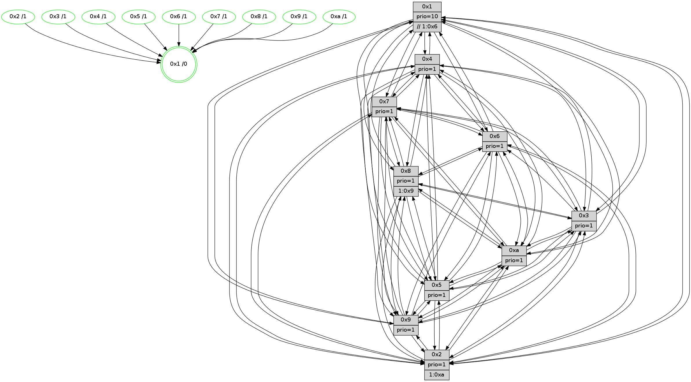

>> << IDX [start] -100 -25 -5 +0 +5 +25 +100 [1255.13309097]
 Previous packets
----------------------------------------------------------------------
1250.404307 beacon01(faad) #0 coord=01,02,03,04,05,06,07,0a,09,08 cycle=688.0ms assoc
-- color-indic=1 64 c9 02
1250.414289 beacon02(faad) #0 coord=01,02,03,04,05,06,07,0a,09,08 cycle=688.0ms assoc 64 5a 33
1250.424290 beacon03(faad) #0 coord=01,02,03,04,05,06,07,0a,09,08 cycle=688.0ms assoc 64 20 7e
1250.434290 beacon04(faad) #0 coord=01,02,03,04,05,06,07,0a,09,08 cycle=688.0ms assoc 64 57 94
1250.444290 beacon05(faad) #0 coord=01,02,03,04,05,06,07,0a,09,08 cycle=688.0ms assoc 64 2d d9
1250.454290 beacon06(faad) #0 coord=01,02,03,04,05,06,07,0a,09,08 cycle=688.0ms assoc 64 a3 0e
1250.464291 beacon07(faad) #0 coord=01,02,03,04,05,06,07,0a,09,08 cycle=688.0ms assoc 64 d9 43
1250.474295 beacon0a(faad) #0 coord=01,02,03,04,05,06,07,0a,09,08 cycle=688.0ms assoc 64 a8 48
1250.484294 beacon09(faad) #0 coord=01,02,03,04,05,06,07,0a,09,08 cycle=688.0ms assoc 64 26 9f
1250.494296 beacon08(faad) #0 coord=01,02,03,04,05,06,07,0a,09,08 cycle=688.0ms assoc 64 5c d2
1250.506101 [Hello(5): seq=798 sym=7,6,4,3,1,9,8,10,2 sysInfo=hasWarning stat=7:10,11,1,13/6:9,5,13,3/4:9,4,8,13/3:13,13,10,15/1:1,14,10,0/9:12,0,7,10/8:7,12,5,3/10:5,1,6,8/2:10,2,10,7]
1250.508826 [Color(9) seq=357 @0:0 prio=1]
1250.510282 [Hello(2): seq=794 sym=4,5,7,3,9,8,10,1 sysInfo=hasWarning stat=4:2,9,1,11/5:7,9,2,1/7:13,5,1,14/3:13,3,2,10/9:4,11,9,9/8:0,6,14,11/10:7,4,7,10/1:3,4,5,0]
1250.512672 [Color(10) seq=387 @0:0 prio=1]
1250.513926 [Hello(3): seq=798 sym=1,7,6,2,4,8,9,10,5 sysInfo=hasWarning stat=1:3,4,11,0/7:13,8,7,12/6:9,4,3,0/2:8,3,7,0/4:10,4,9,11/8:4,5,3,4/9:12,8,12,0/10:14,6,1,4/5:6,0,15,0]
1250.517139 [Hello(6): seq=798 sym=2,3,5,4,7,9,8,10,1 sysInfo=hasWarning stat=2:11,1,4,0/3:0,3,0,0/5:9,2,7,2/4:0,13,4,5/7:11,7,15,12/9:15,15,13,10/8:11,13,9,5/10:5,4,9,12/1:2,0,11,1]
1250.521873 [Color(6) seq=430 @0:0 prio=1]
1250.525025 [Color(3) seq=427 @0:0 prio=1]
1250.526669 [Color(2) seq=374 @0:0 prio=1 >1.@9,1.@a]
1250.532179 [Hello(1): seq=707 sym=4,2,9,5,10,3,8,6,7 sysInfo=coloring-mode-on,ColoringModeRequestCalled stat=4:4,15,5,0/2:8,0,12,3/9:6,2,3,1/5:7,10,6,7/10:14,7,2,7/3:14,5,12,8/8:14,3,3,1/6:10,6,0,15/7:15,6,9,14]
1250.536588 [STC(1) #0.202 tree-change,inconsistent-stability,stable,to-color d=0]
----------------------------------------------------------------------
1251.192438 beacon01(faad) #0 coord=01,02,03,04,05,06,07,0a,09,08 cycle=688.0ms assoc
-- color-indic=1 64 75 07
1251.202420 beacon02(faad) #0 coord=01,02,03,04,05,06,07,0a,09,08 cycle=688.0ms assoc 64 e6 36
1251.212421 beacon03(faad) #0 coord=01,02,03,04,05,06,07,0a,09,08 cycle=688.0ms assoc 64 9c 7b
1251.222422 beacon04(faad) #0 coord=01,02,03,04,05,06,07,0a,09,08 cycle=688.0ms assoc 64 eb 91
1251.232421 beacon05(faad) #0 coord=01,02,03,04,05,06,07,0a,09,08 cycle=688.0ms assoc 64 91 dc
1251.242420 beacon06(faad) #0 coord=01,02,03,04,05,06,07,0a,09,08 cycle=688.0ms assoc 64 1f 0b
1251.252421 beacon07(faad) #0 coord=01,02,03,04,05,06,07,0a,09,08 cycle=688.0ms assoc 64 65 46
1251.262427 beacon0a(faad) #0 coord=01,02,03,04,05,06,07,0a,09,08 cycle=688.0ms assoc 64 14 4d
1251.282425 beacon08(faad) #0 coord=01,02,03,04,05,06,07,0a,09,08 cycle=688.0ms assoc 64 e0 d7
1251.293712 [STC(6)->1 #0.202 tree-change,inconsistent-stability,stable,to-color d=1]
1251.295173 [Hello(4): seq=798 sym=5,7,6,2,3,9,8,10,1 sysInfo= stat=5:2,11,8,0/7:0,15,12,1/6:3,7,13,13/2:10,11,3,15/3:1,0,13,13/9:7,4,2,1/8:12,3,5,1/10:14,10,2,14/1:0,5,12,1]
1251.297983 [STC(4)->1 #0.202 tree-change,inconsistent-stability,stable,to-color d=1]
1251.299483 [Color(1) seq=479 @0:0 prio=10 >>1.@6,1.@7,1.@8]
1251.301548 [TreeStatus(4)-.->1 #0.202 tree-change,inconsistent-stability,stable child=1]
1251.303107 [Hello(7): seq=798 sym=2,3,5,6,4,8,9,10,1 sysInfo=hasWarning stat=2:9,1,2,2/3:14,7,3,1/5:12,1,15,2/6:0,14,2,10/4:2,3,12,1/8:12,2,3,0/9:4,3,1,1/10:15,11,2,6/1:8,0,10,0]
1251.305661 [Hello(9): seq=742 sym=2,5,3,4,7,6,8,10,1 sysInfo=hasWarning stat=2:12,11,5,9/5:4,3,6,6/3:12,3,13,1/4:0,14,6,0/7:4,7,10,1/6:6,2,3,12/8:0,4,7,4/10:13,7,11,4/1:4,10,14,1]
1251.308384 [Hello(10): seq=731 sym=6,2,3,8,7,5,9,4,1 sysInfo=hasWarning stat=6:12,5,6,2/2:13,14,8,11/3:13,11,12,12/8:13,5,2,2/7:0,10,12,6/5:12,11,2,15/9:4,1,12,4/4:1,9,12,0/1:6,3,7,1]
1251.311146 [Hello(8): seq=742 sym=5,2,3,7,9,6,4,10,1 sysInfo=hasWarning stat=5:7,5,11,0/2:5,8,10,11/3:11,10,14,1/7:14,9,4,0/9:5,11,12,4/6:11,10,13,14/4:11,1,1,0/10:15,15,15,4/1:5,11,12,0]
1251.313745 [STC(3)->1 #0.202 tree-change,inconsistent-stability,stable,to-color d=1]
1251.315125 [STC(2)->1 #0.202 tree-change,inconsistent-stability,stable,to-color d=1]
1251.317119 [STC(10)->1 #0.202 tree-change,inconsistent-stability,stable,to-color d=1]
1251.319630 [STC(9)->1 #0.202 tree-change,inconsistent-stability,stable,to-color d=1]
1251.322238 [STC(5)->1 #0.202 tree-change,inconsistent-stability,stable,to-color d=1]
1251.323889 [TreeStatus(5)-.->1 #0.202 tree-change,inconsistent-stability,stable child=1]
1251.325334 [STC(7)->1 #0.202 tree-change,inconsistent-stability,stable,to-color d=1]
1251.326723 [STC(8)->1 #0.202 tree-change,inconsistent-stability,stable,to-color d=1]
1251.328911 [TreeStatus(7)-.->1 #0.202 tree-change,inconsistent-stability,stable child=1]
1251.330264 [Color(8) seq=397 @0:0 prio=1 >1.@9,1.@a]
1251.332735 [TreeStatus(3)-.->1 #0.202 tree-change,inconsistent-stability,stable child=1]
----------------------------------------------------------------------
1251.980568 beacon01(faad) #0 coord=01,02,03,04,05,06,07,0a,09,08 cycle=688.0ms assoc
-- color-indic=1 64 b1 09
1251.990550 beacon02(faad) #0 coord=01,02,03,04,05,06,07,0a,09,08 cycle=688.0ms assoc 64 22 38
1252.000551 beacon03(faad) #0 coord=01,02,03,04,05,06,07,0a,09,08 cycle=688.0ms assoc 64 58 75
1252.010551 beacon04(faad) #0 coord=01,02,03,04,05,06,07,0a,09,08 cycle=688.0ms assoc 64 2f 9f
1252.020552 beacon05(faad) #0 coord=01,02,03,04,05,06,07,0a,09,08 cycle=688.0ms assoc 64 55 d2
1252.030552 beacon06(faad) #0 coord=01,02,03,04,05,06,07,0a,09,08 cycle=688.0ms assoc 64 db 05
1252.040552 beacon07(faad) #0 coord=01,02,03,04,05,06,07,0a,09,08 cycle=688.0ms assoc 64 a1 48
1252.050556 beacon0a(faad) #0 coord=01,02,03,04,05,06,07,0a,09,08 cycle=688.0ms assoc 64 d0 43
1252.070557 beacon08(faad) #0 coord=01,02,03,04,05,06,07,0a,09,08 cycle=688.0ms assoc 64 24 d9
1252.083426 [Hello(1): seq=708 sym=4,2,9,5,10,3,8,6,7 sysInfo=coloring-mode-on,ColoringModeRequestCalled stat=4:5,15,5,1/2:8,0,13,3/9:7,2,4,1/5:7,10,7,8/10:15,7,3,7/3:14,5,13,9/8:15,4,4,1/6:10,6,1,15/7:0,6,10,15]
1252.086080 [Hello(5): seq=799 sym=7,6,4,3,1,9,8,10,2 sysInfo=hasWarning stat=7:10,11,2,14/6:10,6,13,3/4:9,4,8,13/3:14,14,10,0/1:2,14,11,0/9:12,1,7,10/8:7,13,6,3/10:5,2,6,8/2:11,3,10,7]
1252.089477 [Hello(3): seq=799 sym=1,7,6,2,4,8,9,10,5 sysInfo=hasWarning stat=1:4,4,12,0/7:13,8,7,12/6:9,4,3,0/2:8,4,7,0/4:10,4,9,11/8:4,5,3,4/9:12,9,12,0/10:14,6,1,4/5:7,0,15,0]
1252.092819 [Color(10) seq=388 @0:0 prio=1]
1252.096329 [Hello(2): seq=795 sym=4,5,7,3,9,8,10,1 sysInfo=hasWarning stat=4:2,9,1,11/5:8,9,3,2/7:13,5,2,15/3:13,3,2,11/9:4,12,10,9/8:0,7,15,11/10:7,4,8,10/1:4,4,6,0]
1252.100612 [Color(2) seq=375 @0:0 prio=1 >1.@9,1.@a]
1252.102353 [Hello(6): seq=799 sym=2,5,4,7,9,8,10,1 sysInfo=hasWarning stat=2:11,2,5,0/5:10,2,8,3/4:1,13,5,6/7:12,7,0,13/9:0,0,14,10/8:12,14,10,5/10:6,4,10,12/1:3,1,12,1]
1252.105514 [Color(3) seq=428 @0:0 prio=1]
1252.107275 [Color(6) seq=431 @0:0 prio=1]
1252.116777 [Color(9) seq=358 @0:0 prio=1]
----------------------------------------------------------------------
1252.768698 beacon01(faad) #0 coord=01,02,03,04,05,06,07,0a,09,08 cycle=688.0ms assoc
-- color-indic=1 64 0d 0c
1252.778681 beacon02(faad) #0 coord=01,02,03,04,05,06,07,0a,09,08 cycle=688.0ms assoc 64 9e 3d
1252.788681 beacon03(faad) #0 coord=01,02,03,04,05,06,07,0a,09,08 cycle=688.0ms assoc 64 e4 70
1252.798682 beacon04(faad) #0 coord=01,02,03,04,05,06,07,0a,09,08 cycle=688.0ms assoc 64 93 9a
1252.808681 beacon05(faad) #0 coord=01,02,03,04,05,06,07,0a,09,08 cycle=688.0ms assoc 64 e9 d7
1252.818684 beacon06(faad) #0 coord=01,02,03,04,05,06,07,0a,09,08 cycle=688.0ms assoc 64 67 00
1252.828683 beacon07(faad) #0 coord=01,02,03,04,05,06,07,0a,09,08 cycle=688.0ms assoc 64 1d 4d
1252.838687 beacon0a(faad) #0 coord=01,02,03,04,05,06,07,0a,09,08 cycle=688.0ms assoc 64 6c 46
1252.848687 beacon09(faad) #0 coord=01,02,03,04,05,06,07,0a,09,08 cycle=688.0ms assoc 64 e2 91
1252.858690 beacon08(faad) #0 coord=01,02,03,04,05,06,07,0a,09,08 cycle=688.0ms assoc 64 98 dc
1252.869915 [Hello(9): seq=743 sym=2,5,3,4,7,6,8,10,1 sysInfo=hasWarning stat=2:12,11,5,9/5:4,3,7,7/3:12,3,13,2/4:0,14,6,0/7:4,7,11,2/6:6,2,3,12/8:0,5,8,4/10:13,7,11,4/1:5,10,14,1]
1252.873350 [Color(5) seq=362 @0:0 prio=1]
1252.875311 [Hello(7): seq=799 sym=2,3,5,6,4,8,9,10,1 sysInfo=hasWarning stat=2:10,2,2,2/3:15,8,3,2/5:13,1,15,2/6:1,15,3,10/4:2,3,12,1/8:12,3,3,0/9:4,4,1,1/10:15,12,2,6/1:9,0,10,0]
1252.877954 [Hello(4): seq=799 sym=5,7,6,2,3,9,8,10,1 sysInfo= stat=5:3,11,9,1/7:1,15,13,2/6:4,8,14,13/2:11,12,4,15/3:2,1,14,14/9:8,5,3,1/8:13,4,6,1/10:15,11,3,14/1:1,5,12,1]
1252.880388 [Color(7) seq=327 @0:0 prio=1]
1252.886084 [Color(1) seq=480 @0:0 prio=10 >>1.@6,1.@7,1.@8]
1252.887807 [Color(8) seq=398 @0:0 prio=1 >1.@9,1.@a]
1252.891254 [Hello(10): seq=732 sym=6,2,3,8,7,5,9,4,1 sysInfo=hasWarning stat=6:13,6,6,2/2:14,15,8,11/3:13,12,12,13/8:13,6,3,2/7:0,10,13,7/5:12,11,3,0/9:4,2,13,4/4:1,9,12,0/1:7,3,7,1]
----------------------------------------------------------------------
1253.556829 beacon01(faad) #0 coord=01,02,03,04,05,06,07,0a,09,08 cycle=688.0ms assoc
-- color-indic=1 64 d9 39
1253.566811 beacon02(faad) #0 coord=01,02,03,04,05,06,07,0a,09,08 cycle=688.0ms assoc 64 4a 08
1253.576811 beacon03(faad) #0 coord=01,02,03,04,05,06,07,0a,09,08 cycle=688.0ms assoc 64 30 45
1253.586812 beacon04(faad) #0 coord=01,02,03,04,05,06,07,0a,09,08 cycle=688.0ms assoc 64 47 af
1253.596813 beacon05(faad) #0 coord=01,02,03,04,05,06,07,0a,09,08 cycle=688.0ms assoc 64 3d e2
1253.606813 beacon06(faad) #0 coord=01,02,03,04,05,06,07,0a,09,08 cycle=688.0ms assoc 64 b3 35
1253.616811 beacon07(faad) #0 coord=01,02,03,04,05,06,07,0a,09,08 cycle=688.0ms assoc 64 c9 78
1253.626815 beacon0a(faad) #0 coord=01,02,03,04,05,06,07,0a,09,08 cycle=688.0ms assoc 64 b8 73
1253.636817 beacon09(faad) #0 coord=01,02,03,04,05,06,07,0a,09,08 cycle=688.0ms assoc 64 36 a4
1253.646818 beacon08(faad) #0 coord=01,02,03,04,05,06,07,0a,09,08 cycle=688.0ms assoc 64 4c e9
1253.659041 [Hello(1): seq=709 sym=4,2,9,5,10,3,8,6,7 sysInfo=coloring-mode-on,ColoringModeRequestCalled stat=4:5,15,5,1/2:9,1,13,3/9:8,3,4,1/5:8,10,7,8/10:0,8,3,7/3:15,6,13,9/8:15,5,4,1/6:11,7,1,15/7:0,6,10,15]
1253.661775 [Color(9) seq=359 @0:0 prio=1]
1253.663239 [Hello(2): seq=796 sym=4,5,7,6,3,9,8,10,1 sysInfo=hasWarning stat=4:3,10,1,11/5:8,10,3,2/7:14,5,2,15/6:0,1,0,0/3:13,4,2,11/9:5,13,10,9/8:0,8,15,11/10:8,4,8,10/1:5,5,6,0]
1253.666244 [Hello(6): seq=800 sym=2,5,4,7,9,8,10,1 sysInfo=hasWarning stat=2:11,2,5,0/5:10,3,8,3/4:2,13,5,6/7:13,7,0,13/9:1,1,14,10/8:13,15,10,5/10:7,4,10,12/1:4,2,12,1]
1253.669236 [Color(6) seq=432 @0:0 prio=1]
1253.670665 [Color(10) seq=389 @0:0 prio=1]
1253.671968 [Color(2) seq=376 @0:0 prio=1 >1.@a]
1253.677957 [Hello(5): seq=800 sym=7,6,4,3,1,9,8,10,2 sysInfo=hasWarning stat=7:11,11,2,14/6:11,7,13,3/4:10,5,8,13/3:15,15,10,0/1:2,15,11,0/9:13,2,7,10/8:7,14,6,3/10:6,3,6,8/2:12,4,10,7]
1253.680475 [Hello(3): seq=800 sym=1,7,6,2,4,8,9,10,5 sysInfo=hasWarning stat=1:5,5,12,0/7:14,8,7,12/6:9,5,3,0/2:8,4,7,0/4:11,4,9,11/8:5,6,3,4/9:13,10,12,0/10:15,6,1,4/5:7,1,15,0]
1253.683625 [Color(3) seq=429 @0:0 prio=1]
----------------------------------------------------------------------
1254.344961 beacon01(faad) #0 coord=01,02,03,04,05,06,07,0a,09,08 cycle=688.0ms assoc
-- color-indic=1 64 65 3c
1254.354944 beacon02(faad) #0 coord=01,02,03,04,05,06,07,0a,09,08 cycle=688.0ms assoc 64 f6 0d
1254.364944 beacon03(faad) #0 coord=01,02,03,04,05,06,07,0a,09,08 cycle=688.0ms assoc 64 8c 40
1254.374943 beacon04(faad) #0 coord=01,02,03,04,05,06,07,0a,09,08 cycle=688.0ms assoc 64 fb aa
1254.384944 beacon05(faad) #0 coord=01,02,03,04,05,06,07,0a,09,08 cycle=688.0ms assoc 64 81 e7
1254.394944 beacon06(faad) #0 coord=01,02,03,04,05,06,07,0a,09,08 cycle=688.0ms assoc 64 0f 30
1254.404945 beacon07(faad) #0 coord=01,02,03,04,05,06,07,0a,09,08 cycle=688.0ms assoc 64 75 7d
1254.414950 beacon0a(faad) #0 coord=01,02,03,04,05,06,07,0a,09,08 cycle=688.0ms assoc 64 04 76
1254.424949 beacon09(faad) #0 coord=01,02,03,04,05,06,07,0a,09,08 cycle=688.0ms assoc 64 8a a1
1254.434949 beacon08(faad) #0 coord=01,02,03,04,05,06,07,0a,09,08 cycle=688.0ms assoc 64 f0 ec
1254.446477 [Hello(10): seq=733 sym=6,2,3,8,7,5,9,4,1 sysInfo=hasWarning stat=6:13,6,6,2/2:14,0,8,11/3:14,13,12,13/8:13,6,3,2/7:0,10,13,7/5:13,11,3,0/9:4,2,13,4/4:1,9,12,0/1:8,3,7,1]
1254.449191 [Hello(9): seq=744 sym=2,5,3,4,7,6,8,10,1 sysInfo=hasWarning stat=2:13,12,5,9/5:5,4,7,7/3:13,4,13,2/4:1,15,6,0/7:5,7,11,2/6:7,3,3,12/8:0,6,8,4/10:14,8,11,4/1:6,11,14,1]
1254.454741 [Color(4) seq=339 @0:0 prio=1]
1254.456521 [Hello(7): seq=800 sym=2,3,5,6,4,8,9,10,1 sysInfo=hasWarning stat=2:11,3,2,2/3:0,9,3,2/5:14,1,15,2/6:2,0,3,10/4:2,3,12,1/8:13,4,3,0/9:5,5,1,1/10:0,13,2,6/1:10,1,10,0]
1254.459666 [Color(7) seq=328 @0:0 prio=1]
1254.463837 [STC(1) #0.203 tree-change,inconsistent-stability,stable,to-color d=0]
1254.467380 [Color(1) seq=481 @0:0 prio=10 >>1.@6,1.@7,1.@8]
1254.474046 [Color(5) seq=363 @0:0 prio=1]